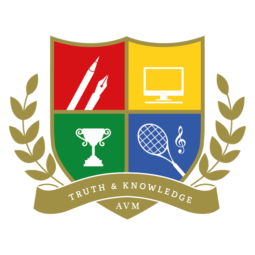

◎
GLOBAL
PERSPECTIVES
Understand issues beyond borders.

INTRA SCHOOL
READ, THINK, QUESTION, CHANGE.
WELCOME TO ISMUN
ISMUN is Nath Valley School's annual simulation of the United Nations, built to challenge students to research deeply, speak boldly, negotiate thoughtfully and create solutions that matter.
ENTER THE DELEGATE HUB →Understand issues beyond borders.
Analyse, question and challenge ideas.
Negotiate, collaborate and lead with empathy.
Small steps today, big change tomorrow.
WORDS FROM OUR LEADERS
Welcome messages from the people guiding ISMUN 4.0.
THE ISMUN EXPERIENCE
Experience the workings of global bodies and councils.
Guidance that rewards research, diplomacy and substance.
Move from speeches to practical, well-reasoned solutions.
Honouring excellence, preparation and leadership.
Build friendships, confidence and stories worth remembering.
ENTER THE CHAMBER
Choose your arena. Research your mandate. Make your voice count.
DELEGATE HUB
Everything you need before you enter committee.
MARK YOUR CALENDAR
THE TEAM BEHIND THE CONFERENCE
Meet the students shaping ISMUN 4.0.
YOUR SEAT AWAITS
Register, prepare your position and walk into committee ready to negotiate.
REGISTER FOR ISMUN 4.0 →MOMENTS
Memories from ISMUN.


EXCELLENCE
Results will be published here after the conference.
THE ISMUN LEGACY
Keep every Secretariat's work alive instead of rebuilding the website every year.
STAY CONNECTED
Questions about registration, committees or resources? Contact the ISMUN Secretariat.